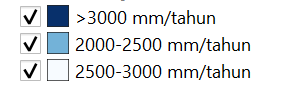

Analisis Penentuan Lahan Pertanian Di Kabupaten Sleman Daerah Istimewa Yogyakarta
Dibuat Oleh : Muhammad Tegar Raung Ardi
Latar Belakang
Sebagai negara agraris, pertanian tidak bisa jauh dari setiap daerah di Indonesia. Sawah yang fungsinya sebagai tempat menanam padi dimana itu merupakan makanan pokok orang Indonesia tersebar di seluruh Indonesia,. Begitu juga di Daerah Istimewa Yogyakarta, khususnya pada kabupaten Sleman. Guna mencukupi kebutuhan beras masyarakat Sleman yang terus meningkat , tentunya adanya lahan pertanian juga dibutuhkan. Agar supaya hal tersebut seimbang, sebab dengan tercukupinya kebutuhan tersebut akan menekan angka import serta menaikkan pendapatan para petani di daerah Sleman pada khususnya.
Tujuan
Analisis ini, bertujuan dalam penentuan lahan pertanian baru yang nantinya akan direalisasikan pada Kabupaten Sleman Daerah Istimewa Yogyakarta yang berguna untuk menyeimbangkan kebutuhan pangan di wilayah Sleman. Dengan hasil analisis ini, harapannya dapat membantu dalam mempertimbangkan penentuan lokasi pertanian yang telah dikalkulasi dengan faktor - faktor pendukung.
Dalam penentuan daerah pertanian, dibutuhkan beberapa aspek yang mana aspek tersebut mendukung untuk dijadikan sebagai pertimbangan dalam penentuan lahan pertanian. Aspek - aspek yang diperhatikan dalam melakukan analisis penentuan lahan pertanian di wilayah Kabupaten Sleman Daerah Istimewa Yogyakarta antara lain sebagai berikut :
1. Curah Hujan

Untuk menjadi lahan pertanian yang sesuai, hal pertama yang perlu diperhatikan adalah curah hujan, karena curah hujan berpengaruh terhadap kondisi tanah pertanian selain itu juga akan berpengaruh terhadap kelangsungan hidup tumbuhan pertanian nantinya. Diperlukan curah hujan yang pas dalam artian tidak kurang dan tidak lebih supaya tumbuhan pertanian nantinya dapat tumbuh dengan maksimal. Disamping merupakan klasifikasi curah hujan di Kabupaten Sleman Daerah Istimewa Yogyakarta. Sesuai dengan kebutuhan pertanian curah hujan yang sesuai adalah dalam range 2500-3000 mm/tahun. maka dari itu menggunakan metode pembobotan, daerah yang memiliki nilai curah hujan 2500-3000 mm/tahun akan mendapat nilai tinggi.
2. Jenis Tanah
Kondisi jenis tanah di Kabupaten Sleman Daerah Istimewa Yogyakarta sangat beragam, hal ini dipengaruhi karena terdapat kawasan Gunung Merapi yang mana secara vulkanis menyababkan banyaknya lapisan tanah karena aktifitas Gunung Merapi tersebut. Banyaknya jenis tanah di Kabupaten Sleman Daerah Istimewa Yogyakarta menjadikan peluang usaha bagi masyarakat setempat, mulai dari lahan pertanian, lahan perkebunan, pasir material dan lain-lain. Sesuai dengan analisis penentuan lahan pertanian yang dilakukan, berdasarkan dengan jurnal dan informasi yang telah dibaca. Jenis tanah yang sesuai untuk lahan pertanian adalah jenis 'Typic Fluvaquents' , 'Typic Fragiaquents' dan 'Typic Eutropepts' jenis tanah diatas yang paling cocok untuk kegiatan pertanian, namun ada jenis tanah lain yang sesuai namun ada juga yang tidak sesuai. Maka dari itu, dilakukan analisis spasial untuk memberi pembobotan pada jenis-jenis tanah yang paling sesuai, kurang sesuai dan tidak sesuai untuk lahan pertanian.
3. Kelerengan
Tingkat kelerengan suatu daerah juga berpengaruh terhadap penentuan lahan pertanian. Apabila daerah tersebut memiliki kelerengan yang curam, maka kurang sesuai untuk kegiatan pertanian karena sulit dalam pengerjaan kegiatan pertanian seperti membajak. Selain itu daerah dengan kelerengan curam akan sulit dalam sistem irigasi atau pengairan yang digunakan di lahan pertanian tersebut. Disamping merupakan klasifikasi tingkat kelerengan di Kabupaten Sleman Daerah Istimewa Yogyakarta, dari data tersebut dilakukan analisis spasial dengan pembobotan dimana tingkat kelerengan yang rendah mendapat nilai tinggi karena cocok untuk lahan pertanian.
PETA ANALISIS PENENTUAN LAHAN PERTANIAN DI KABUPATEN SLEMAN DAERAH ISTIMEWA YOGYAKARTA
Dari Peta Analisis Penentuan Lahan Pertanian Di Kabupaten Sleman Daerah Iatimewa Yogyakarta di atas dapat diperoleh informasi daerah mana saja yang sangat sesuai untuk dijadikan sebagai lahan pertanian. Selain itu juga diberikan informasi lain seperti lahan yang sesuai, kurang sesuai, tidak sesuai, dan sangat tidak sesuai untuk menjadi lahan pertanian. Informasi tersebut tentunya hasil dari analisis spasial dalam mempertimbangkan aspek dalam penentuan lahan pertanian seperti curah hujan, jenis tanah dan tingkat kelerengan. Pada peta diatas juga dapat menampilkan sebaran dari klasifikasi curah hujan maupun sebaran dari klasifikasi tingkat kelerangan di Kabupaten Sleman Daerah Istimewa Yogyakarta.
Penutup
Sekian Analisis Penentuan Lahan Pertanian Di Kabupaten Sleman Daerah Istimewa Yogyakarta. Harapannya dari analisis yang ada dapat dijadikan acuan dalam penentual lahan pertanian, karena sudah mempertimbangkan aspek-aspek yang berpengaruh terhadap pertanian seperti curah hujan, jenis tanah dan kelerengan. Sehingga dalam pelaksanaannya nanti dapat berjalan maksimal dan mendapatkan hasil pertanian yang maksimal juga.
Review
Setelah membaca Analisis Penentuan Lahan Pertanian Di Kabupaten Sleman Daerah Istimewa Yogyakarta di atas. Mohon berikan review serta kritik dan saran terhadap halaman web ini.
.png)
.png)